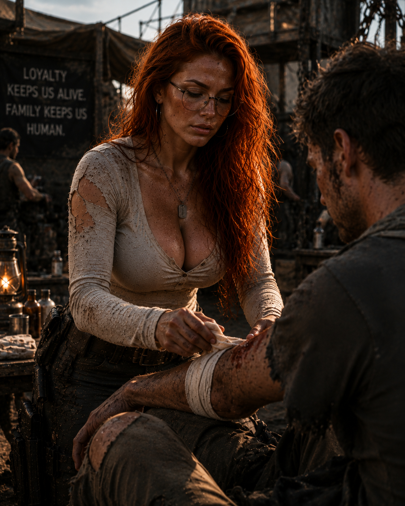

Lealdade mantém
a família humana.
O arquivo preserva Mary em diferentes momentos no assentamento: prestando auxílio, estudando rotas e atravessando o território. Sua função definitiva não será estabelecida antes da história oficial.
